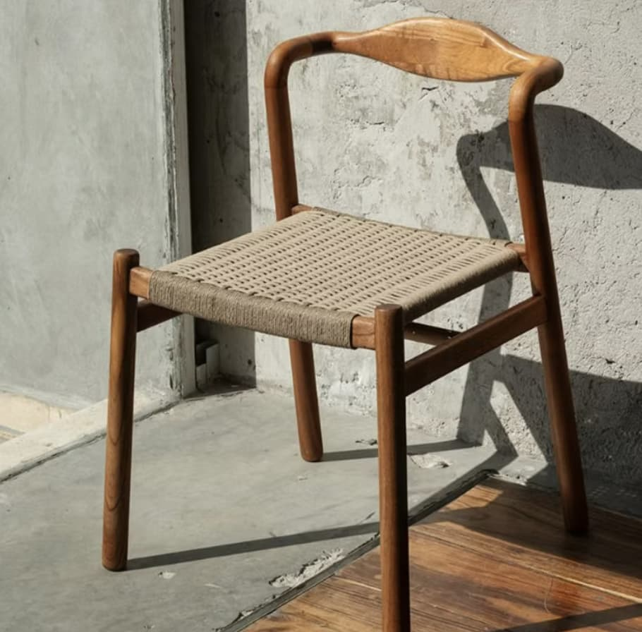

Esta silla destaca por su diseño minimalista en madera, enfocándose en funcionalidad y estética limpia. La marca Pirwi es reconocida por producir mobiliario contemporáneo accesible dentro del mercado mexicano.
Precio: aprox. $19,000 MXN